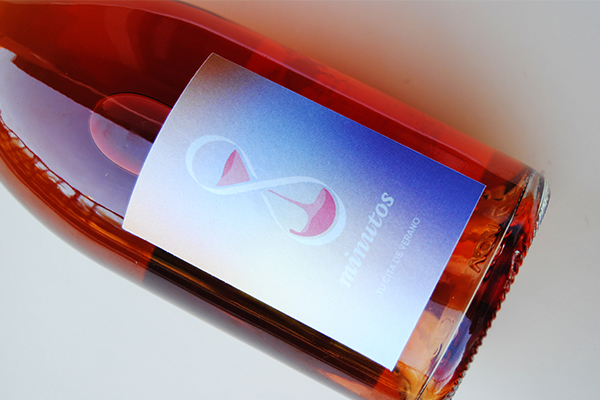

8 minutos
Packaging. Proyecto académico.
8 minutos es un vino rosado procedente de la Comunidad Valenciana de gran calidad y delicadeza.
El diseño de este packaging de vino rosado fresco, joven y afrutado se construye sobre los valores de elegancia, libertad y ruptura de lo tradicional y tiene como referente principal un atardecer de un día de verano. Adoptando como personalidad de marca la del amante, es un vino que te transportará a las mejores playas del Mediterráneo.